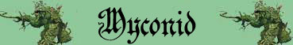

|
|
Ambiente/Habitat | Sotterranei |
| Frequenza | Rara | |
| Organizzazione | Comunità | |
| Periodo di Attività | Qualsiasi | |
| Dieta | Erbivora | |
| Intelligenza | Average intelligence (8) | |
| Punti Combattimento | Nessuno | |
| Tesoro | (Nel giardino centrale tesoro occasionale di 3 creature di 9 DV) | |
| Allineamento Dominante | Legale Neutrale | |
| Numero di Apparizione | 1d8+2 | |
| Classe Armatura | 5 [10 base, 4 corazza, 1 destrezza] | |
| Movimento | 6 esagoni | |
| Dadi Vita | 1d12: (1-5) 3 (6-9) 4 (10-12) 5 | |
| Thac0 | [3 DV] 18 [4 DV] 17 [5 DV] 16 | |
| Numero di Attacchi | Pugno | |
| Danni | [3 DV] 1d6+2 [4 DV] 1d8+3 [5 DV] 1d10+4 (botta) | |
| Poteri Offensivi | Spore Confusionali; | |
| Poteri Difensivi | Nessuno | |
| Poteri Generici | Poteri dei Piantiformi; | |
| Vulnerabilità | Nessuna | |
| Resistenza alla Magia | Nessuna | |
| Sensi | Oscurovisione | |
| Dimensioni | [3 DV] Small (1 m.) [4 DV] Medium (2 m.) [5 DV] Large (3 m.) | |
| Morale | Steady (12) | |
| Valore in Punti Esperienza | [3 DV] 117 [4 DV] 241 [5 DV] 389 |
|
TIRI SALVEZZA DELLA CREATURA [3 DV] |
|||||||
| CORAGGIO | ENERGIA VITALE | MAGIA | MALATTIA | MENTE | RIFLESSI | ROBUSTEZZA | VELENO |
| 0 | +10%* | 0 | Immunità Piante | Immunità Piante | 0 | 0 | Immunità Piante |
| 49 | 46 | 62 | 47 | 60 | 49 | 58 | 51 |
|
TIRI SALVEZZA DELLA CREATURA [4 DV] |
|||||||
| CORAGGIO | ENERGIA VITALE | MAGIA | MALATTIA | MENTE | RIFLESSI | ROBUSTEZZA | VELENO |
| 0 | +10%* | 0 | Immunità Piante | Immunità Piante | 0 | 0 | Immunità Piante |
| 49 | 45 | 62 | 47 | 60 | 54 | 53 | 49 |
|
TIRI SALVEZZA DELLA CREATURA [5 DV] |
|||||||
| CORAGGIO | ENERGIA VITALE | MAGIA | MALATTIA | MENTE | RIFLESSI | ROBUSTEZZA | VELENO |
| 0 | +10%* | 0 | Immunità Piante | Immunità Piante | 0 | 0 | Immunità Piante |
| 45 | 40 | 59 | 44 | 57 | 53 | 47 | 41 |
Descrizione
Sono funghi dall'aspetto vagamente umanoide che non sono dotati di una bocca. Alla base del cappello possono intravedersi due occhi che, quando sono chiusi, si mimetizzano perfettamente con il resto del loro corpo. Sono di colore marroncino chiaro e la loro dimensione varia notevolmente passando da un metro a circa 3 metri.
Combat
Questi funghi combattono solo qualora sono costretti a difendere sé stessi od i loro interessi. In tali occasioni spruzzano le loro spore confusionali sui nemici quando possibile per poi attaccarli con le loro ruvide braccia che usano come rami per infliggere forti bastonate.
SPORE
CONFUSIONALI
(Moderate Special Ability):
In luogo di effettuare una diversa azione complessa, queste creature possono
rilasciare una nube di spore ad un
fattore iniziativa pari a +2. Le
spore avranno effetto su tutti
coloro si trovano in una posizione adiacente alla creatura.
Costoro, quindi, dovranno superare immediatamente un tiro salvezza su veleno per
non subire gli effetti negativi delle spore. Si consideri l'effetto delle spore
come un vero e proprio veleno gassoso a contatto.
Tipologia
Contatto,
Onset
il veleno agirà a partire
dall'inizio del round successivo,
Effetti
Nessuno/Confusione
minore per 5 round,
Delay
None,
Tiro Salvezza
senza modificatori,
Assuefazione
Nessuna.
Le creature sotto effetto della confusione minore
dovranno effettuare, per l'intera durata dell'effetto venefico, un tiro di 1d6
per determinare le proprie azioni. Si consulti la seguente tabella per
determinare all'inizio del round (nella fase delle intenzioni) l'azione della
vittima:
1-2) La vittima potrà agire normalmente.
3-4) La vittima attaccherà la creatura a costei più vicina (se vi sono creature
equidistanti, verificare a sorte quella attaccata).
5-6) La vittima resterà ferma sul posto senza compiere alcuna azione (non subirà
però penalità alla propria classe armatura).
Il tiro per determinare l'azione della vittima dovrà essere ripetuto ogni
singolo round. Si noti che qualora si verifichi il risultato di attacco alla
creatura più vicina (3-4) la vittima effettuerà i suoi attacchi comuni più
lesivi (scegliendo ad es. l'arma che possa provocare più danni) senza però
effettuare attacchi o poteri speciali, senza lanciare incantesimi e senza
utilizzare punti combattimento.
Si noti che questo
veleno non produce alcun effetto sulle creature di tipo vegetale.
Una volta utilizzato questo
potere la
creatura non può utilizzarlo nuovamente nei nove rounds di
combattimento immediatamente successivi.
POTERI DEI PIANTIFORMI : In quanto creature piantiformi ottengono le seguenti caratteristiche degli esseri vegetali (link).
Habitat/Society
Questi funghi vivono in comunità suddivise in tre circoli. Il circolo dei giovani che riunisce i funghi di 3 DV (solitamente conta 4d6+1 esemplari), il circolo degli adulti che riunisce i funghi di taglia media (solitamente conta 3d6+2 esemplari) ed il circolo degli anziani che riunisce i funghi più grossi (solitamente conta 2d6+3 esemplari). Queste creature sono coltivatori di funghi, licheni e muffe sotterranee che rappresentano il loro principale ed unico nutrimento. Non esistono coltivatori migliori di funghi e di licheni di queste creature che dedicano a tale attività la loro intera esistenza. I Myconid rappresentano una razza isolazionista e pacifica. Le loro comunità non crescono oltre una certa dimensione che è proporzionata alle coltivazioni che riescono a porre in essere. Per tale motivo non aggrediscono nuovi territori o cavità sotterranee ma sono estremamente gelosi delle loro dimore e coltivazioni proteggendo strenuamente il loro territorio. Oltre alle sale dei tre circoli ed alla caverne dedicate alle coltivazioni, comunemente una comunità di Myconid possiede una sala interna rappresentata da un giardino con la presenza di pozze d'acqua, si tratta di una sala rituale dove avvengono le riunioni della comunità e dove sono custoditi, solitamente, i suoi tesori. Queste creature non sono dotate di alcuna forma di linguaggio né di apparato vocale non potendo emettere alcun suono. Comunicano tra loro con flussi di spore attraverso messaggi di tipo chimico che, ovviamente, solo la loro razza può decifrare ad una distanza massima di circa 30 metri.
Ecology
La vita media di un Myconid è pari a 30 anni, il fungo resta, infatti, per circa 10 anni ad ogni stadio della sua crescita.
[3 DV]
Mystical Resource Sourge
(Spore) Quantità: 1, Presenza 20%
- Scuola di Magia:
Charm
- Qualità della Risorsa:
Common.
[4 DV]
Mystical Resource Sourge
(Spore) Quantità: 1, Presenza 25%
- Scuola di Magia:
Charm
- Qualità della Risorsa:
Common.
[5 DV]
Mystical Resource Sourge
(Spore) Quantità: 1, Presenza 33%
- Scuola di Magia:
Charm
- Qualità della Risorsa:
Common.